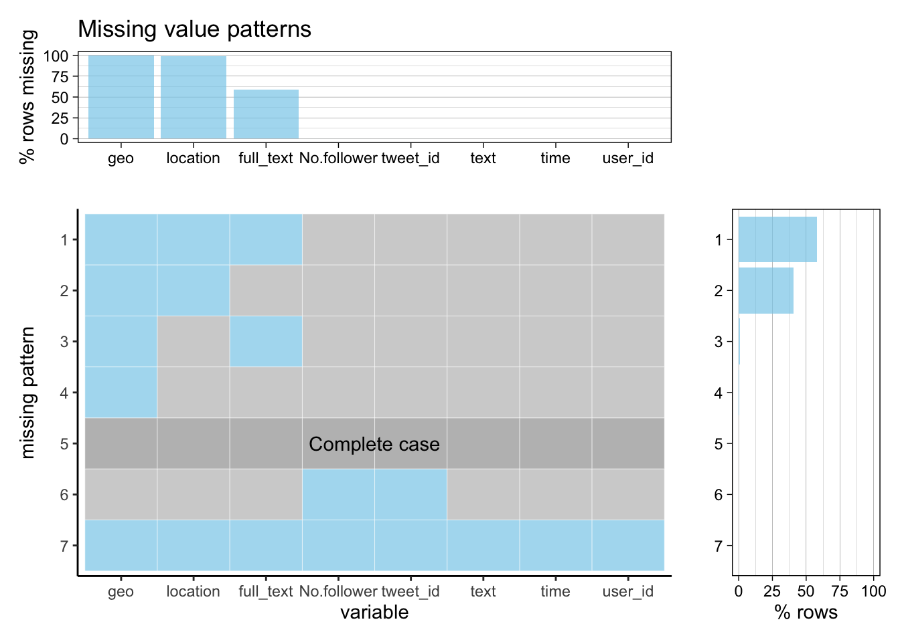

Chapter 4 Missing values
4.1 Twitter Dataset
We conducted analysis on the missing values before forming our final dataset. Of all the features, we first choose 8 features to consider. 7 out of the 8 features are introduced in the previous section, and the only feature that we left out is geo. The missing value graph will support our decision. Another thing worth mentioning is that all the added features will not be presented. Since they are dervied from text, and they will not contain any missing value.
Here we use the whole raw data set containing tweets from October 28th to Novemeber 3rd. There are a total of 471,996 tweets. The following is a missing value graph of our raw dataset. We modified the feature names a bit to make sure the graph is clean.
| Feature | Count |
|---|---|
| geo | 471944 |
| location | 466755 |
| full_text | 277690 |
| No.follower | 56 |
| tweet_id | 56 |

As shown in the graph, the geo feature has the most missing values that is close to 100%. From the documentation, geo is the tweet location that is tagged by the user. It indicates that Twitter users seldom specify a location for tweets. Because of the high missing percentage, we choose to remove the feature. Another largely missing data column is location with 5241 valid values. location is a self-identified location by the user, and is has the format like ‘Manhattan, NY’. We think that we will be able to derive some geological pattern based on the limited data we have. The missing value in text is interesting. text can only holds up to 140 character and if a tweet exceeds the limit, full_text is the feature that will capture the complete contents. We see that around half of the users write short text when post tweets related to Elon Musk.
Looking at the missing patterns. More than a half of the tweets are missing geo and location, and around 46% of the tweets have additional missing value in full_text. The other three missing patterns are trivial. We do notice that there is a missing pattern that has missing value in every feature. We found out that there we 56 empty rows in our dataset and we removed those row manually.